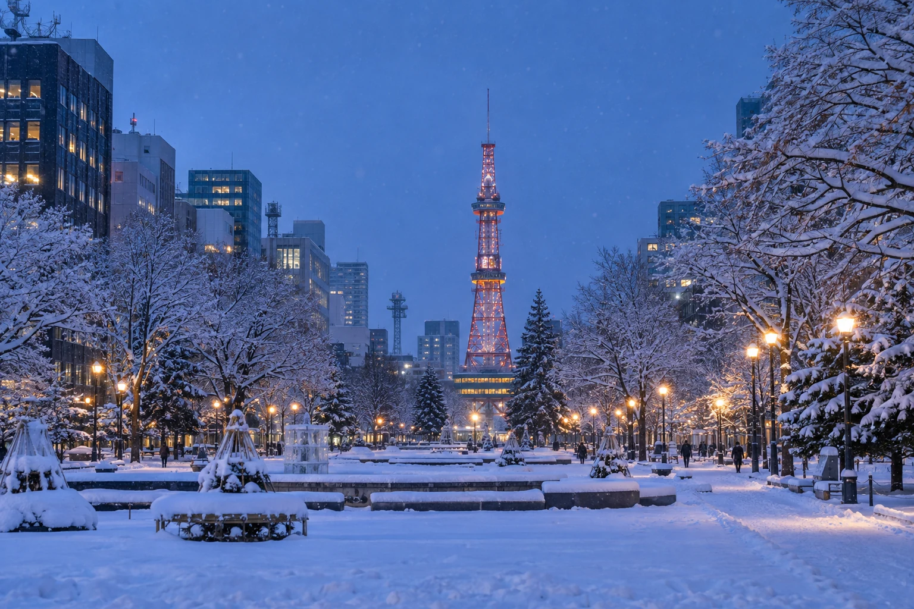
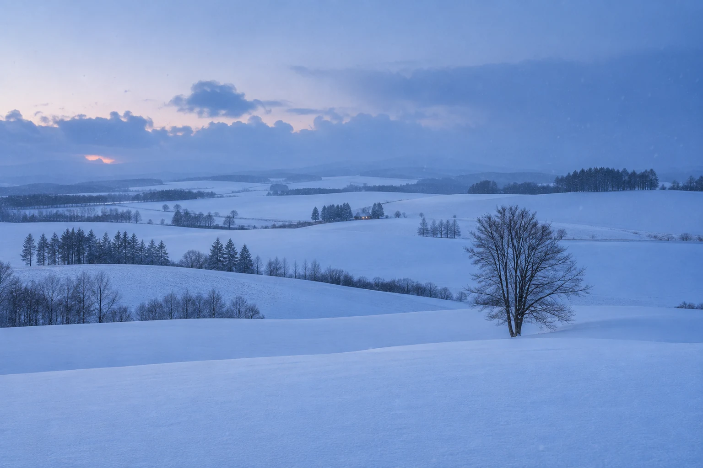
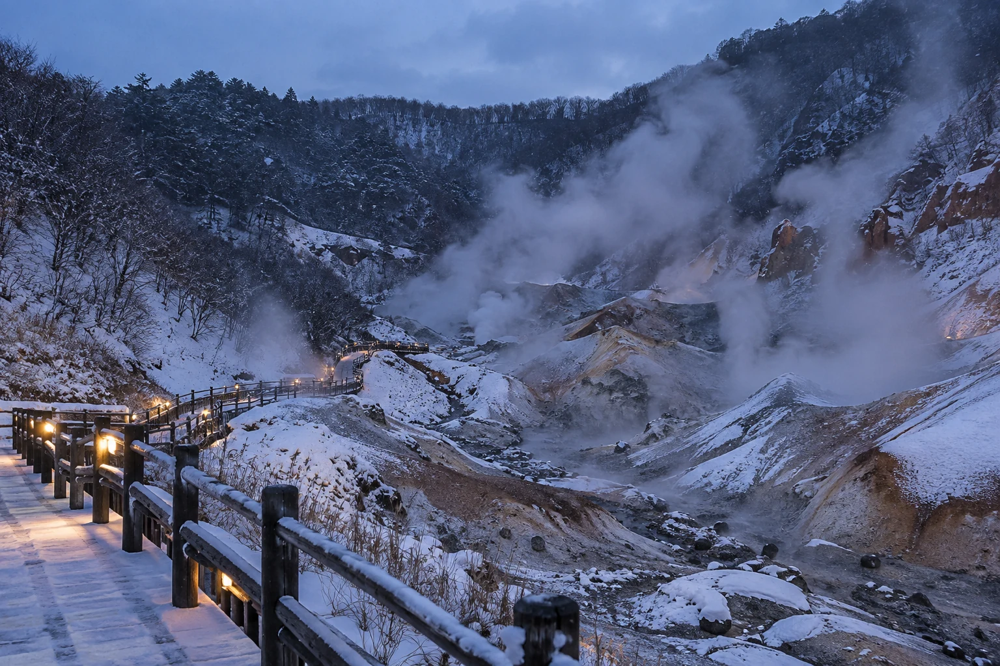

FOUR-NIGHT BASE
在雪与城市灯火之间
旅程从这里慢慢展开。清晨的二条市场有热气腾腾的早餐，大通公园与北海道神宫适合感受冬日城市的呼吸；到了夜里，电视塔、狸小路和薄野把街道点亮。
二条市场D2 早晨以海鲜丼与热食开启一天，排队太久就换一家。
大通公园与电视塔同一片街区值得看两次：白天看积雪，夜晚看灯光。
北海道神宫在圆山公园与神宫之间慢慢走，风雪大时缩短户外停留。
吃什么汤咖喱、味噌拉面、成吉思汗烤肉。
拍什么大通公园纵深与电视塔的蓝调夜色。
从札幌的街灯，到小樽的蓝调、函馆的海，再到登别的温泉。把三个人的冬日旅程，写成一本能在路上随时翻开的手册。
从新千岁落地，以札幌为前半程据点；向西看港町，向北追雪原，再沿岛屿南下，把函馆与登别留给旅程后半段。
把札幌留作前半程的据点：向西去小樽，向北追到旭川与美瑛；D5 再沿岛屿南下抵达函馆，最后在登别温泉放慢脚步，从新千岁离开。地图只保留旅程所需的方向感与城市关系，路线不代替现场导航。
按事件所在地时区计算
每一站都有自己的性格。这里不增加必须打卡的任务，只把原有路线里的景色、味道与拍摄重点提前展开。

FOUR-NIGHT BASE
旅程从这里慢慢展开。清晨的二条市场有热气腾腾的早餐，大通公园与北海道神宫适合感受冬日城市的呼吸；到了夜里，电视塔、狸小路和薄野把街道点亮。
CANAL BLUE HOUR
小樽的魅力不在赶完几个地点，而在白雪落到仓库屋檐、玻璃器皿反射灯光时的细节。上午看运河雪景，下午走进堺町通，天色转暗前再回到水边。
ANIMALS IN SNOW
旭山动物园是 D4 一日团的第一站。企鹅散步取决于积雪和动物状态，不能视为固定演出；冬季开放时间短，跟随集合安排比追赶单一展区更重要。

FIELDS OF WHITE
美瑛冬天最动人的不是颜色，而是白色的层次、丘陵的曲线和树木留下的线条。青池可能被冰雪覆盖，白天与夜间点灯是两种不同体验。
HILLS, HARBOR & LIGHTS
函馆把港湾、坡道、朝市和夜景放在一座适合慢走的城市里。第一天优先保证函馆山，第二天再把时间留给朝市、汤之川和雪中的五棱郭。

STEAM IN THE SNOW
从函馆抵达后，不再安排密集景点。沿温泉街走到地狱谷，只走当日开放路径，再把傍晚与夜晚交给旅馆、热汤和休息。
航班和酒店分开整理，各自左右翻阅；一眼看清出发、抵达与入住安排。
按出发顺序排列，当前卡完整展示，下一张保留一角提示滑动。
按入住顺序排列，电话、地址和入住备注集中在每张卡里。
当前方案使用 JR、巴士、市电与步行，无租车安排。旭川／美瑛一日团、特急北斗指定席及景点门票尚未确认预订。酒店早餐、登别晚餐是否包含，需核对订单套餐。
先看当天的故事与重点，需要执行时再展开完整时间轴。页面中的行程时刻均为事件发生地当地时间。
一碗热汤、一段蓝调，还有落在围巾上的雪。以下内容都来自既定路线，不增加新的强制行程。
THE SMALL THINGS / OUR WINTER
北海道的冬天很适合边走边暖身：札幌的一碗热食、小樽运河之后的甜点、函馆朝市的海鲜，以及登别温泉夜里慢下来的晚餐。
二条市场早餐、汤咖喱、味噌拉面或成吉思汗都在原计划内。热门店排队太久，就选择附近替代。
三角市场、堺町通与 LeTAO 适合串成一段慢步行。15:40 后优先返回运河，不为甜点错过暮色。
函馆朝市吃海鲜丼，晚餐可选盐味拉面、海鲜或烤乌贼。第一天先保证函馆山。
这是全程最适合放慢脚步的一晚。旅馆餐食尚待核实，确认之前不按已经包含执行。
同一条运河各留一张，拍下积雪与灯光在水面的变化。
减少画面元素，只在司机允许的安全停靠点取景。
能见度和缆车运行决定结果，不为一张照片压缩安全余量。
共同待办与雪国实用指南。清单勾选状态会保存在当前设备中。
不只写记得保暖，也写遇到风雪、晚点和计划变化时怎么处理。
采用贴身层、保暖层、防风防水外层。戴帽子、手套，准备防滑防水鞋；进入室内后及时减衣。
雪地小步走，坡道预留更多时间。手机和备用电池放内袋；拍照不站在车道上。
跨城以 JR 和一日团为主。巴士所示车程是计划值，降雪、路况与高速封闭都可能延长，不据此安排紧接着的预约。
暴雪时先保航班和住宿衔接。D8 前一晚查运行状态，准备提早出发；出租车也受路况影响。
大件行李尽量寄存酒店。特急座位、行李规则和各交通 IC 卡使用范围，以运营方为准。
羽田 T1 到 T3 需另行转移；酒店与 T3 相连。抵达日先取行李，再按机场指示换航站楼。
冬天别为一家店长时间排队。准备附近替代餐厅，带少量日元现金。酒店套餐未确认前，不把早餐或晚餐当作已含。
温泉先洗净再入池，遵守旅馆浴场规则。夜间散步以亮灯、开放的温泉街为限。
日本为 JST（UTC+9）；成都和香港为 UTC+8。时差 1 小时，跨时区飞行不能直接相减钟面时间。
倒计时使用完整日期与时区；配色“自动”跟随设备当地时间，06:00—18:00 使用日间色，其余为夜间色。
日本报警 110；消防／救护 119。酒店电话见预订区；国际拨号已去掉区号前的 0。
离线手册不提供实时航变或导航。遇停运先查机场、JR 和航司官方通知，必要时请酒店协助。